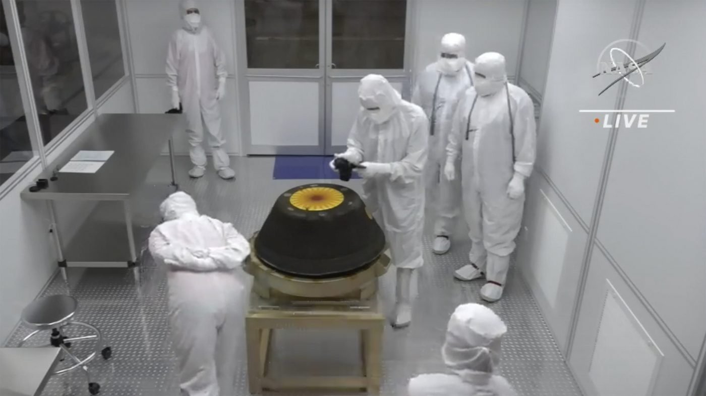
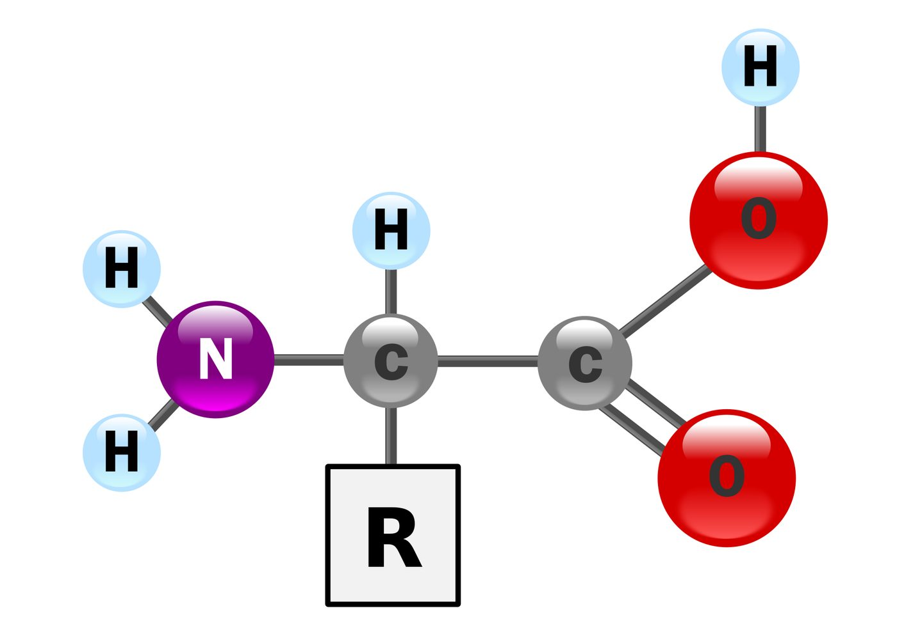

Writing / Science
Asteroid Bennu’s secrets: building blocks of life found in space

Scientists have made an exciting discovery that could help us understand how life began — not just on Earth, but possibly elsewhere in the universe. Samples collected from asteroid Bennu, brought back by Japan’s Hayabusa spacecraft, contain ingredients essential for life. While this doesn’t prove life came from space, it reveals the universe might be full of the tools needed to create it.
Why Bennu’s samples are special
For decades, scientists studied meteorites (space rocks that land on Earth) to find clues about life’s origins. The problem? Meteorites get contaminated when they crash through Earth’s atmosphere. Heat, impact, and exposure to our environment make it hard to confirm if their contents truly came from space.
Bennu’s samples are different. The Hayabusa spacecraft collected them directly from the asteroid and sealed them in a protective capsule, shielding them from Earth’s contaminants. This makes Bennu’s rocks the “purest” space samples we’ve ever analyzed.
Key discoveries in the space dust
- Ammonia overload: 75× more ammonia than other asteroid samples
- Alien amino acids: 19 types not found in Earth biology
- Saltwater history: evidence of ancient liquid water reactions

The life recipe connection
While Bennu’s samples contain life’s ingredients, this doesn’t confirm the panspermia hypothesis (life spreading through asteroids). What it does show is that asteroids could have delivered life’s raw materials to Earth. As one scientist noted: We’ve found the LEGO blocks, but we still don’t know how they were assembled.
Looking beyond Bennu
Scientists are now targeting icy moons like Jupiter’s Europa and Saturn’s Enceladus. NASA’s upcoming Europa Clipper mission will explore the moon’s subsurface ocean — a potential hotspot for alien life. As researcher Dr. Jane Smith explains: Where there’s water and organic molecules, there’s potential for life’s chemistry.
A time capsule for future science
Only 30% of Bennu’s samples have been analyzed. The rest are preserved for future generations using technology we haven’t invented yet. This is a good argument that shows how we still study Moon rocks collected in the 1970s with modern tools.
Scientific reference: original study in Nature Astronomy.